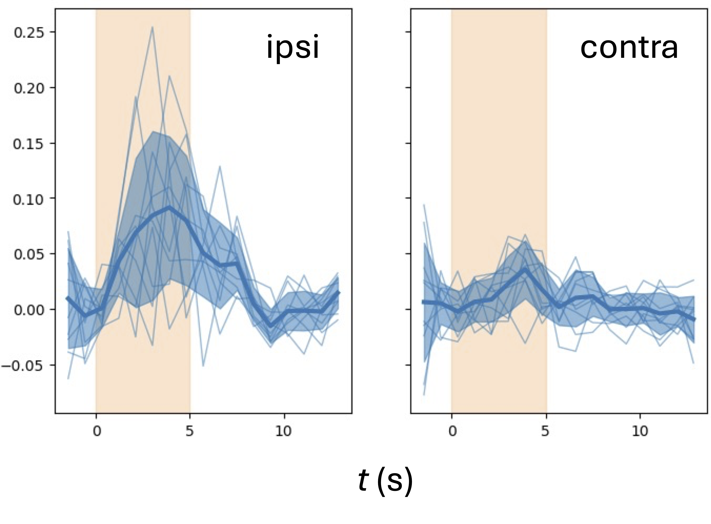

https://bit.ly/DavidZimmermanSamuelLab
Dissecting the neural substrates of interhemispheric integration in the larval Drosophila olfactory system
David Zimmerman
Motivation
A bilaterally symmetric nervous system receives two parallel streams of sensory input
. . . but has to behave as one animal
I call the neural correlate of this phenomenon interhemispheric integration (IHI)
in other words, symmetrization
How could this work?
Complete sensory pooling?
Parallel processing with contrast detection?

Why study IHI in the larval olfactory system
Adult flies do osmotropotaxis
Borst and Heisenberg (1982)
Gaudry et al (2013)
Wiring implicates the mushroom body in IHI
Hierarchical wiring in the mushroom body

Most MBINs and MBONs receive contralateral and ipsilateral KC input
MBIN wiring
DANs ,
OANs , and
MBINs
Of DANs, only DAN-g1 receives exclusively ipsilateral KC input
MBON wiring
Only medial lobe MBONs (k1, j1, h1, h2, i1) receive ipsi- and contralateral KC input
All MBONs receive ipsi- and contralateral from other MBONs
Unfolding MBON wiring reveals hierarchy
Microfluidics, imaging, laser ablation
Microfluidics, imaging, laser ablation
ORNs receive ipsilateral input from their sensory dendrites
Microfluidics, imaging, laser ablation
KCs receive ipsilateral input from ORNs
1. Minimal functional IHI upstream of KCs
2. Strong functional IHI in the DANs
3. Weak functional IHI in the MBONs
3. Weak functional IHI in MBON m1
Acknowledgments
Samuel Lab
David Zimmerman
Haoru Li
Stan Lazopulo
Helena Casademunt
Core Park
Ishaan Chandok
Alina Vrabioiu
Gabriel Hosu